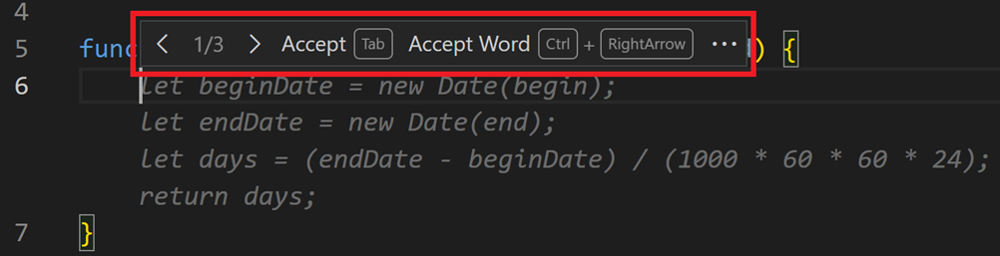
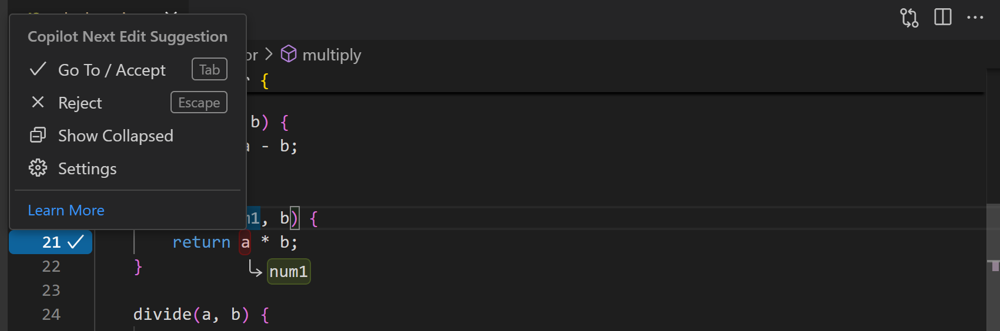
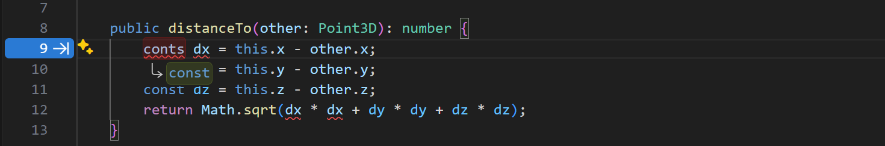
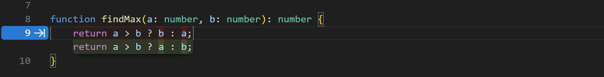
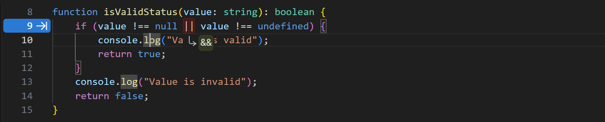
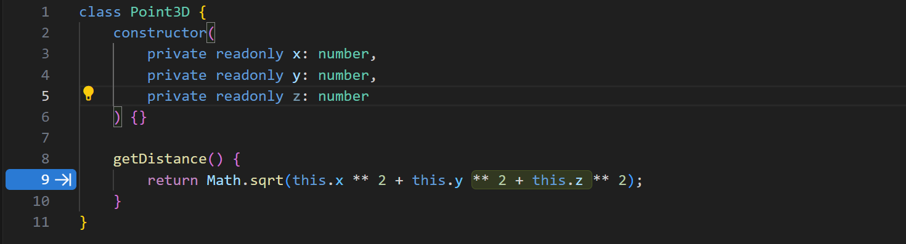
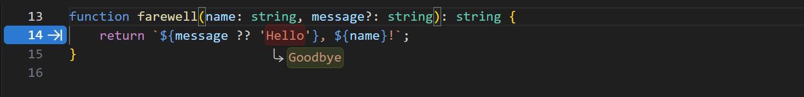
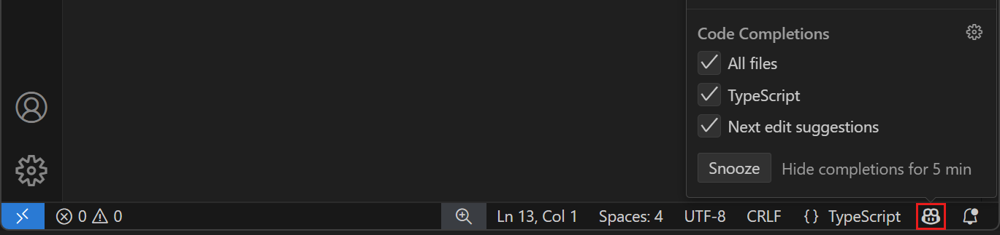

Code completions with GitHub Copilot in VS Code
GitHub Copilot acts as an AI-powered pair programmer, automatically offering suggestions to complete your code, comments, tests, and more. It provides these suggestions directly in the editor while you write your code, and it can work with a broad range of programming languages and frameworks.
Copilot provides two kinds of suggestions:
-
Code completions - Start typing in the editor, and Copilot provides code suggestions that match your coding style and take your existing code into account.
-
Next edit suggestions - Predict your next code edit with Copilot next edit suggestions, aka Copilot NES. Based on the edits you're making, NES both predicts the location of the next edit you'll want to make and what that edit should be.
Getting started
-
Install the GitHub Copilot extensions.
-
Sign in with your GitHub account to use Copilot.
TipIf you don't yet have a Copilot subscription, you can use Copilot for free by signing up for the Copilot Free plan and get a monthly limit of completions and chat interactions.
-
Discover the key features of Copilot in VS Code with our Copilot Quickstart.
Inline suggestions
Copilot offers code suggestions as you type: sometimes the completion of the current line, sometimes a whole new block of code. You can accept all, or part of a suggestion, or you can keep typing and ignore the suggestions.
Notice in the following example how Copilot suggests an implementation of the calculateDaysBetweenDates JavaScript function by using dimmed ghost text:

When you're presented with an inline suggestion, you can accept it with the Tab key.
Copilot tries to apply the same coding style for the code suggestions that you already have in your code. Notice in the following example that Copilot applies the same input parameter naming scheme from the add method for the suggested subtract method.

Partially accepting suggestions
You might not want to accept an entire suggestion from GitHub Copilot. You can use the ⌘→ (Windows, Linux Ctrl+Right) keyboard shortcut to accept either the next word of a suggestion, or the next line.
Alternative suggestions
For any given input, Copilot might offer multiple, alternative suggestions. You can hover over the suggestion to any of the other suggestions.

Generate suggestions from code comments
Instead of relying on Copilot to provide suggestions, you can provide hints about what code you expect by using code comments. For example, you could specify a type of algorithm or concept to use (for example, "use recursion" or "use a singleton pattern"), or which methods and properties to add to a class.
The following example shows how to instruct Copilot to create a class in TypeScript to represent a student, providing information about methods and properties:

Next edit suggestions
Inline suggestions are great at autocompleting a section of code. But since most coding activity is editing existing code, it's a natural evolution of Copilot code completions to also help with edits, both at the cursor and further away. Edits are often not made in isolation - there's a logical flow of what edits need to be made in different scenarios. Next edit suggestions (Copilot NES) is this evolution.
Based on the edits you're making, next edit suggestions both predicts the location of the next edit you'll want to make and what that edit should be. Copilot NES helps you stay in the flow, suggesting future changes relevant to your current work, and you can simply Tab to quickly navigate and accept Copilot's suggestions. Suggestions may span a single symbol, an entire line, or multiple lines, depending on the scope of the potential change.
To get started with Copilot NES, enable the VS Code setting github.copilot.nextEditSuggestions.enabled.
Navigate and accept edit suggestions
You can quickly navigate to suggested code changes with the Tab key, saving you time to find the next relevant edit (no manual searching through files or references required). You can then accept a suggestion with the Tab key again.
An arrow in the gutter indicates if there is an edit suggestion available. The arrow indicates where the next edit suggestion is located, relative to your current cursor position.
You can hover over the arrow to explore the edit suggestion menu, which includes keyboard shortcuts and settings configuration:

If you are a VS Code vim extension user, please use the latest version of the extension to avoid any conflicts in keybindings with NES.
Reduce distractions by edit suggestions
By default, edit suggestions are indicated by the gutter arrow and the code changes are shown in the editor. Enable the editor.inlineSuggest.edits.showCollapsed setting to show the code changes in the editor only until you press the Tab key to navigate to the suggestion or until you hover over the gutter arrow. Alternatively, hover over the gutter arrow and select the Show Collapsed option from the menu.
Use cases for next edit suggestions
Catching and correcting mistakes
-
Copilot helps with simple mistakes like typos. It'll suggest fixes where letters are missing or swapped, like
cont x = 5orconts x = 5, which should've beenconst x = 5.
-
Copilot can also help with more challenging mistakes in logic, like an inverted ternary expression:

Or a comparison that should've used
&&instead of||:
Changing intent
-
Copilot suggests changes to the rest of your code that match a new change in intent. For example, when changing a class from
PointtoPoint3D, Copilot will suggest to add azvariable to the class definition. After accepting the change, Copilot NES next recommends addingzto the distance calculation:
Refactoring
-
Rename a variable once in a file, and Copilot will suggest to update it everywhere else. If you use a new name or naming pattern, Copilot suggests to update subsequent code similarly.

-
Matching code style. After copy-pasting some code, Copilot will suggest how to adjust it to match the current code where the paste happened.
Enable or disable code completions
You can enable or disable code completions either for all languages or for specific languages only. To enable or disable code completions, select the Copilot menu in the Status Bar, and then check or uncheck the options to enable or disable code completions. The option to disable code completions for a specific language is dependent on the language of the active editor.

Alternatively, modify the github.copilot.enable setting in the Settings editor. Add an entry for each language you want to enable or disable code completions for. To enable or disable code completions for all languages, set the value for * to true or false.
To temporarily disable all code completions in the editor, select the Copilot menu in the Status Bar, and then select the Snooze button to increment the snooze time by five minutes. To resume code completions, select the Cancel Snooze button in the Copilot menu.
Alternatively, use the Snooze Inline Suggestions and Cancel Snooze Inline Suggestions commands in the Command Palette.
Change the AI model for completions
Different Large Language Models (LLMs) are trained on different types of data and might have different capabilities and strengths. Learn more about how to choose between different AI language models in VS Code.
To change the language model that is used for generating code completions in the editor:
-
Open the Command Palette (F1).
-
Type change completions model and select the GitHub Copilot: Change Completions Model command.
-
In the dropdown menu, select the model you want to use.
The list of available models might vary and change over time. The model picker may not always show more than one model, and preview models and additional code completion models will become available there if/when we release them. If you are a Copilot Business or Enterprise user, your Administrator needs to enable certain models for your organization by opting in to Editor Preview Features in the Copilot policy settings on GitHub.com.
Tips & tricks
Context
To give you relevant inline suggestions, Copilot looks at the current and open files in your editor to analyze the context and create appropriate suggestions. Having related files open in VS Code while using Copilot helps set this context and lets Copilot get a bigger picture of your project.
Settings
Code completions settings
-
github.copilot.enable - enable or disable inline completions for all or specific languages.
-
editor.inlineSuggest.fontFamily - configure the font for the inline completions.
-
editor.inlineSuggest.showToolbar - enable or disable the toolbar that appears for inline completions.
-
editor.inlineSuggest.syntaxHighlightingEnabled - enable or disable syntax highlighting for inline completions.
Next edit suggestions settings
-
github.copilot.nextEditSuggestions.enabled - enable Copilot next edit suggestions (Copilot NES).
-
editor.inlineSuggest.edits.allowCodeShifting - configure if Copilot NES is able to shift your code to show a suggestion.
-
editor.inlineSuggest.edits.renderSideBySide - configure if Copilot NES can show larger suggestions side-by-side if possible, or if Copilot NES should always show larger suggestions below the relevant code.
- auto (default): show larger edit suggestions side-by-side if there is enough space in the viewport, otherwise the suggestions are shown below the relevant code.
- never: never show suggestions side-by-side, always show suggestions below the relevant code.
-
github.copilot.nextEditSuggestions.fixes - enable next edit suggestions based on diagnostics (squiggles). For example, missing imports.
-
editor.inlineSuggest.minShowDelay - Time in milliseconds to wait before showing inline suggestions. Default is
0.
Next steps
-
Discover the key features in the Quickstart.
-
Use AI chat conversations with chat in VS Code.
-
Watch the videos in our VS Code Copilot Series on YouTube.